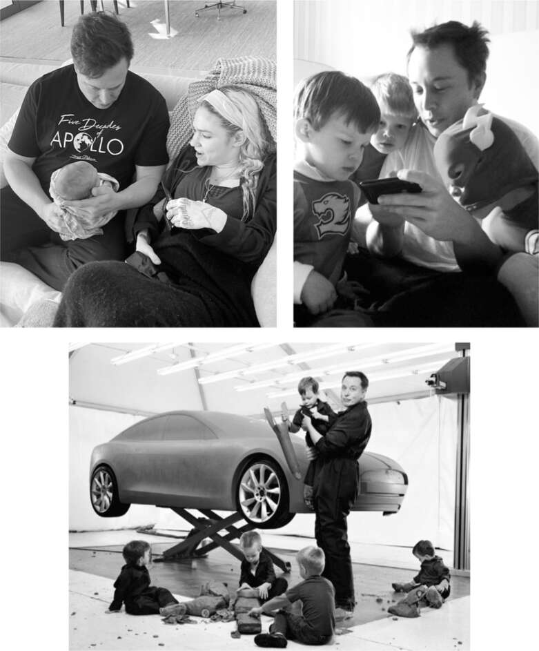

X Æ A-12
Cuộc sống cá nhân của Musk đã thay đổi hoàn toàn vào tháng 5 năm 2020 với sự ra đời của cậu con trai được biết đến với cái tên X. Là con đầu lòng trong số ba người con của ông với Grimes, X sở hữu một nét đáng yêu lạ thường khiến Musk, người luôn khao khát sự hiện diện của con, cảm thấy bình yên và say mê. Ông đưa X đi khắp mọi nơi. Cậu bé ngồi trên đùi bố trong các cuộc họp dài, cưỡi trên vai bố đi dạo quanh các nhà máy Tesla và SpaceX, lon ton khám phá các công trường lắp đặt mái năng lượng mặt trời, biến khu vực sảnh chờ của Twitter thành sân chơi của mình, và bi bô nói chuyện trong các cuộc họp qua điện thoại đêm khuya. Hai bố con thường xuyên cùng nhau xem video phóng tên lửa, và cậu bé học đếm ngược từ mười trước khi biết đếm xuôi từ một.
Cũng có một nét tương đồng với Musk trong cách họ tương tác. Họ gắn bó mật thiết nhưng cũng hơi xa cách, trân trọng sự hiện diện của nhau nhưng vẫn tôn trọng không gian riêng của đối phương. Musk, giống như cha mẹ mình, không quá bảo bọc hay bao vây con. X không bao giờ đeo bám hay phụ thuộc. Họ tương tác nhiều, nhưng không âu yếm quá mức.
Musk và Grimes, thụ thai bằng phương pháp thụ tinh trong ống nghiệm, đã dự định sinh con gái, nhưng trứng được cấy, khi họ chuẩn bị đến Burning Man vào năm 2019, lại là con trai. Họ đã chọn sẵn một cái tên (giống) tên con gái, Exa, viết tắt của exaflops, một thuật ngữ siêu máy tính chỉ khả năng thực hiện một triệu tỷ phép tính mỗi giây. Cho đến ngày X chào đời, họ vẫn chưa chọn được tên cho con trai.
Cuối cùng, họ chọn một cái tên nghe như mật khẩu Druid được tạo tự động: X Æ A-12. Grimes cho biết, X đại diện cho “biến số chưa biết”. Æ, một chữ ghép từ tiếng Latinh và tiếng Anh cổ, phát âm là “ash”, là “cách viết kiểu elf của tôi cho Ai (tình yêu &/hoặc Trí tuệ nhân tạo)”. A-12, phải được viết là A-Xii trên giấy khai sinh vì California không cho phép sử dụng chữ số trong tên, là đóng góp của Musk, ám chỉ một chiếc máy bay do thám tuyệt đẹp có tên là Archangel. “Chiến đấu bằng thông tin, không phải bằng vũ khí”, Grimes nói về A-12. “Tên đệm luôn là một cuộc chiến vì Elon muốn bỏ nó đi vì anh ấy nghĩ nó quá rườm rà. Tôi muốn đặt đến năm cái tên nhưng ba là một sự thỏa hiệp.”
Khi X chào đời, Musk đã chụp ảnh Grimes đang sinh mổ và gửi cho bạn bè và gia đình, bao gồm cả bố và anh em của cô. Grimes tất nhiên rất kinh hoàng và vội vàng yêu cầu xóa ảnh. “Đó là biểu hiện rõ ràng của hội chứng Asperger của Elon”, cô nói. “Anh ấy hoàn toàn không hiểu tại sao tôi lại buồn.”
Một tuần sau, các con lớn của Musk đến thăm bố và em X. Saxon, cậu con trai mắc chứng tự kỷ của ông, đặc biệt hào hứng vì rất yêu trẻ con. Musk đã bắt đầu ghi lại những quan sát đơn giản mà Saxon đưa ra và thậm chí chia sẻ chúng với Justine. “Saxon có một nhận thức rất thú vị”, cô nói, “vì bạn có thể thấy cậu bé vật lộn với các khái niệm trừu tượng, như thời gian và ý nghĩa của cuộc sống. Cậu bé suy nghĩ theo những thuật ngữ rất cụ thể khiến bạn có một cách nhìn nhận khác về vũ trụ.”
Saxon là một trong ba đứa trẻ sinh ba, được thụ thai bằng phương pháp thụ tinh trong ống nghiệm, và hai anh em sinh đôi còn lại là Kai và Damian. Ban đầu, chúng giống nhau đến nỗi Justine nói rằng ngay cả cô cũng khó phân biệt được. Nhưng chúng trở thành một nghiên cứu thú vị về vai trò của di truyền, môi trường và ngẫu nhiên. “Chúng sống trong cùng một ngôi nhà, cùng một phòng, có những trải nghiệm giống nhau và đạt kết quả tương tự trong các bài kiểm tra”, Musk nói. “Nhưng Damian tự cho mình là thông minh, còn Kai thì không, vì lý do nào đó. Thật kỳ lạ.”
Tính cách của họ rất khác nhau. Damian hướng nội, ăn ít, và tuyên bố ăn chay từ năm tám tuổi. Khi tôi hỏi Justine lý do, cô ấy đưa điện thoại cho Damian trả lời. "Để giảm lượng khí thải carbon của con," cậu bé giải thích. Cậu trở thành một thần đồng âm nhạc cổ điển, sáng tác những bản sonata u ám và luyện piano hàng giờ liền. Musk thường cho mọi người xem video quay Damian chơi đàn trên điện thoại. Cậu cũng là một thiên tài toán học và vật lý. "Mẹ nghĩ Damian còn thông minh hơn cả con," Maye Musk từng nói với con trai mình, và anh gật đầu đồng ý.
Kai, cao hơn và điển trai nổi bật, lại hướng ngoại và thích giải quyết các vấn đề thực tế một cách thực hành. "Nó cao to và khỏe mạnh hơn Damian, lại rất hay che chở cho em," Justine nói. Kai là đứa trẻ quan tâm nhất đến các khía cạnh kỹ thuật trong công việc của cha mình và là người thường xuyên cùng cha đến Cape Canaveral xem phóng tên lửa. Điều đó làm Musk rất vui, ông từng nói rằng khoảnh khắc buồn nhất là khi các con không muốn đi chơi với mình.
Anh cả Griffin, cũng có chung quan điểm đạo đức và sự dịu dàng như các em. Cậu cũng hiểu cha mình rất rõ. Tại một sự kiện ở nhà máy Tesla tại Texas, Griffin đang chơi với bạn bè thì cha cậu hỏi có muốn đi cùng vào hậu trường không. Griffin do dự, nói muốn ở lại với bạn, rồi nhìn các bạn, nhún vai, và đi theo cha. Giỏi khoa học và toán, Griffin có sự nhẹ nhàng mà cha cậu thiếu, và là người hòa đồng nhất trong gia đình, ít nhất là cho đến khi X ra đời.
Còn người em sinh đôi khác trứng của Griffin. Được đặt tên một phần theo nhân vật yêu thích của Musk trong loạt truyện tranh X-Men của Marvel, Xavier rất cứng đầu và dần hình thành sự căm ghét sâu sắc với chủ nghĩa tư bản và giàu có. Đã có những cuộc tranh cãi gay gắt, trực tiếp và qua tin nhắn, Xavier liên tục nói: "Con ghét bố và tất cả những gì bố đại diện." Đó là một trong những lý do khiến Musk quyết định bán nhà và sống giản dị hơn, nhưng điều đó không mấy ảnh hưởng đến mối quan hệ của họ. Đến năm 2020, rạn nứt đã không thể hàn gắn. Xavier không cùng các anh chị em đến thăm em trai cùng cha khác mẹ mới sinh.
Vì vậy, Xavier và Elon đã xa cách khi cậu bé mười sáu tuổi quyết định chuyển giới thành nữ vào khoảng thời gian X chào đời. "Chào mọi người, cháu là người chuyển giới, và bây giờ tên cháu là Jenna," cô bé nhắn tin cho Christiana, vợ của Kimbal. "Đừng nói với bố cháu." Cô cũng nhắn tin cho Grimes, yêu cầu cô giữ bí mật. Cuối cùng, Musk biết được chuyện này từ một thành viên trong đội an ninh của mình.
Musk sau đó thường xuyên tranh cãi, đôi khi công khai, về các vấn đề chuyển giới. Vài tháng sau khi Xavier trở thành Jenna, nhưng trước khi công khai, Musk đã đăng một bức tranh biếm họa về một người lính đang đau đớn với chú thích "Khi bạn đặt he/him trong tiểu sử của mình." Khi bị chỉ trích, ông đã xóa bài đăng và cố gắng giải thích. "Tôi hoàn toàn ủng hộ người chuyển giới, nhưng tất cả các đại từ này là một cơn ác mộng thẩm mỹ." Ông ngày càng lên tiếng nhiều hơn về các vấn đề chuyển giới và đến năm 2023, ông đã ủng hộ làn sóng phản đối việc hỗ trợ y tế cho trẻ em dưới mười tám tuổi muốn chuyển giới.
Christiana khẳng định Elon không hề có thành kiến với người đồng tính hay chuyển giới. Cô cho rằng nguyên nhân mâu thuẫn với Jenna xuất phát từ tư tưởng Mác-xít cực đoan của cô ấy chứ không phải do giới tính. Bản thân Christiana cũng có kinh nghiệm về việc này. Cô từng có thời gian xa cách cha mình, một tỷ phú, và trước khi kết hôn với Kimbal, cô đã kết hôn với nữ ca sĩ nhạc rock da màu Deborah Anne Dyer, nghệ danh là Skin. “Hồi tôi còn chung sống với vợ cũ, Elon đã cố gắng thuyết phục chúng tôi sinh con”, cô nói. “Anh ấy không hề có định kiến về người đồng tính, chuyển giới hay chủng tộc.”
Musk nói rằng bất đồng quan điểm với Jenna “trở nên căng thẳng khi cô ấy vượt xa chủ nghĩa xã hội, trở thành một người cộng sản hoàn toàn và cho rằng bất kỳ ai giàu có đều là xấu xa.” Ông một phần đổ lỗi cho điều mà ông gọi là sự truyền bá tư tưởng cấp tiến đã lan tràn trong trường tư thục Crossroads ở Los Angeles mà Jenna theo học. Khi các con còn nhỏ, ông đã cho chúng học tại một ngôi trường do ông lập ra cho gia đình và bạn bè, tên là Ad Astra. “Chúng học ở đó cho đến khoảng mười bốn tuổi, nhưng sau đó tôi nghĩ chúng nên được tiếp xúc với thế giới thực ở trường trung học”, ông nói. “Điều tôi nên làm là mở rộng Ad Astra đến hết bậc trung học.”
Ông nói rằng mâu thuẫn với Jenna khiến ông đau khổ hơn bất cứ điều gì trong đời kể từ sau cái chết của con trai đầu lòng Nevada khi còn nhỏ. “Tôi đã nhiều lần làm lành”, ông nói, “nhưng cô ấy không muốn gặp tôi.”
Sự giận dữ của Jenna khiến Musk nhạy cảm với những phản ứng dữ dội nhắm vào giới tỷ phú. Ông tin rằng việc trở nên giàu có bằng cách xây dựng các công ty thành công và tiếp tục đầu tư tiền vào đó không có gì sai. Nhưng đến năm 2020, ông bắt đầu cảm thấy việc rút tiền mặt từ khối tài sản đó và phung phí vào tiêu dùng cá nhân là điều không nên và không hiệu quả.
Trước đó, ông sống khá xa hoa. Ngôi nhà chính của ông ở khu Bel Air, Los Angeles, được mua với giá 17 triệu đô la vào năm 2012, là một “cung điện” rộng hơn 1400 mét vuông với bảy phòng ngủ và một phòng khách, mười một phòng tắm, phòng tập thể dục, sân tennis, hồ bơi, thư viện hai tầng, phòng chiếu phim và vườn cây ăn quả. Đó là nơi năm đứa con của ông có thể cảm thấy như lâu đài của riêng mình. Chúng ở với ông bốn ngày một tuần và có lịch học tennis, võ thuật và các hoạt động khác tại nhà.
Khi ngôi nhà của diễn viên Gene Wilder ở bên kia đường được rao bán, Musk đã mua nó để giữ gìn. Sau đó, ông mua thêm ba ngôi nhà xung quanh và có ý định phá bỏ một số để xây dựng ngôi nhà mơ ước của riêng mình. Ông cũng sở hữu một bất động sản theo phong cách Địa Trung Hải rộng hơn 19 hecta với 13 phòng ngủ trị giá 32 triệu đô la ở Thung lũng Silicon.
Đầu năm 2020, Musk quyết định bán tất cả. “Tôi đang bán gần như tất cả tài sản vật chất”, ông đăng trên Twitter ba ngày trước khi X chào đời. “Sẽ không sở hữu bất kỳ ngôi nhà nào.” Ông giải thích với Joe Rogan về cảm xúc dẫn đến quyết định đó. “Tôi nghĩ tài sản vật chất làm ta nặng nề và chúng là một điểm yếu dễ bị tấn công”, ông nói. “Trong những năm gần đây, ‘tỷ phú’ đã trở thành một từ mang nghĩa tiêu cực, như thể đó là một điều xấu. Họ sẽ nói, ‘Này, tỷ phú, anh có tất cả những thứ này.’ Giờ thì tôi không có gì cả, vậy các người định làm gì?”
Sau khi bán hết nhà ở California, Musk chuyển đến Texas, và Grimes cũng nhanh chóng theo sau. Ngôi nhà nhỏ ở Boca Chica mà anh thuê của SpaceX trở thành nơi ở chính của anh. Anh dành phần lớn thời gian ở Austin, mượn nhà của Ken Howery, bạn anh từ thời PayPal, người từng là đại sứ tại Thụy Điển và sau đó dành thời gian đi du lịch thế giới. Căn nhà rộng hơn 700 mét vuông bên hồ được tạo bởi sông Colorado nằm trong một khu biệt lập, nơi nhiều tỷ phú Austin khác sinh sống. Đó là nơi lý tưởng để anh tụ họp với các con vào những ngày lễ, cho đến khi tờ Wall Street Journal đưa tin anh đang sống ở đó. "Tôi đã ngừng ở nhà Ken sau khi bị Journal tiết lộ thông tin," anh nói. "Mọi người cứ tìm đến, và có người đã đột nhập vào nhà khi tôi không có ở đó."
Sau một hồi tìm kiếm không mấy nhiệt tình, anh tìm thấy một căn nhà gần đó đủ rộng và, theo lời anh, "là một căn nhà đẹp, dù không phải kiểu xuất hiện trên Architectural Digest." Người bán ra giá 70 triệu đô la, và anh trả giá 60 triệu đô la, bằng số tiền anh đã bán nhà ở California. Nhưng lúc đó, người bán, khi giao dịch với người giàu nhất thế giới trong một thị trường bất động sản cực kỳ sôi động, lại muốn nhiều hơn giá ban đầu. Musk từ bỏ. Thay vào đó, anh hài lòng với việc sử dụng một căn hộ chung cư ở Austin của một người bạn hoặc ở tại một ngôi nhà mà Grimes thuê trong một con hẻm cụt hẻo lánh.
Sau chuyến đi đến Stockholm dự tiệc sinh nhật của Ken Howery vào tháng 11 năm 2020, Musk có kết quả xét nghiệm dương tính với COVID. Anh gọi cho Kimbal, người cũng bị nhiễm bệnh cùng thời điểm. Mối quan hệ của họ đã căng thẳng, đặc biệt là sau mùa thu năm 2018 đầy biến cố. Nhưng họ lại gắn bó khi Elon bay đến Boulder để cùng nhau vượt qua những triệu chứng COVID nhẹ.
Kimbal, người tin vào việc chữa lành tâm trí bằng cách sử dụng các chất gây ảo giác tự nhiên hợp pháp, đã lên kế hoạch cho một buổi lễ Ayahuasca, bao gồm việc uống trà gây ảo giác dưới sự hướng dẫn của một pháp sư. Anh cố gắng thuyết phục Elon tham gia cùng mình, nghĩ rằng điều đó có thể giúp anh chế ngự những con quỷ trong lòng. "Một buổi lễ Ayahuasca liên quan đến cái chết của bản ngã," Kimbal giải thích. "Tất cả những gánh nặng bạn mang theo sẽ biến mất. Bạn sẽ là một con người khác sau đó."
Elon từ chối. "Tôi chỉ có những cảm xúc bị chôn vùi dưới quá nhiều lớp bê tông, tôi chưa sẵn sàng để mở lòng," anh nói. Thay vào đó, anh chỉ muốn đi chơi với Kimbal. Sau khi xem một vụ phóng SpaceX trên máy tính và vui đùa ở Boulder, họ cảm thấy chán và đi máy bay của Elon đến Austin. Ở đó, họ chơi trò chơi điện tử mới yêu thích của Elon, Polytopia, và xem say sưa Cobra Kai, một bộ phim truyền hình trên Netflix dựa trên bộ phim Karate Kid.
Trong phim, các nhân vật từ bộ phim gốc giờ đã ở độ tuổi cuối bốn mươi, giống như Elon và Kimbal, với những đứa con ở độ tuổi của các con Musk. "Nó chạm đến cả hai chúng tôi, bởi vì nó có một người cực kỳ đồng cảm, do Ralph Macchio thủ vai, và người kia thì không," Kimbal nói. "Cả hai đều đang vật lộn với những thử thách của riêng mình với hình tượng người cha và cả cách làm cha cho con cái của họ." Trải nghiệm này rất nhẹ nhõm, ngay cả khi không có buổi lễ Ayahuasca. "Chúng tôi lại như hai đứa trẻ," Kimbal nói. "Đó là khoảng thời gian tuyệt vời nhất. Chúng tôi chưa bao giờ nghĩ rằng mình sẽ có lại một tuần như thế trong đời."

Với Grimes và Baby X, và với những đứa con lớn hơn của ông